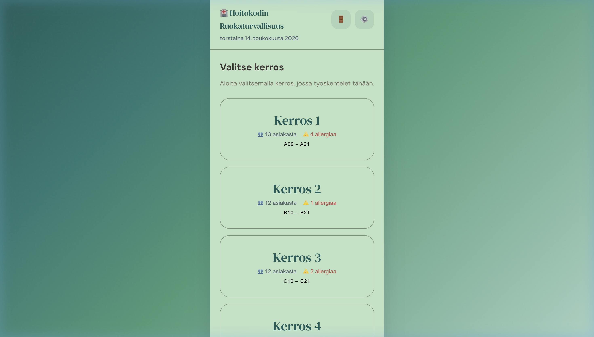
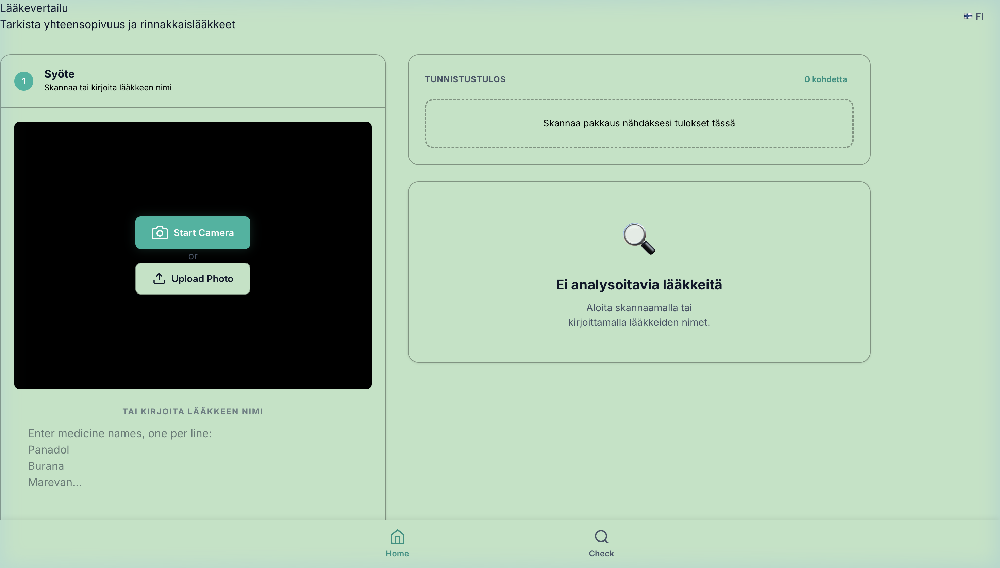
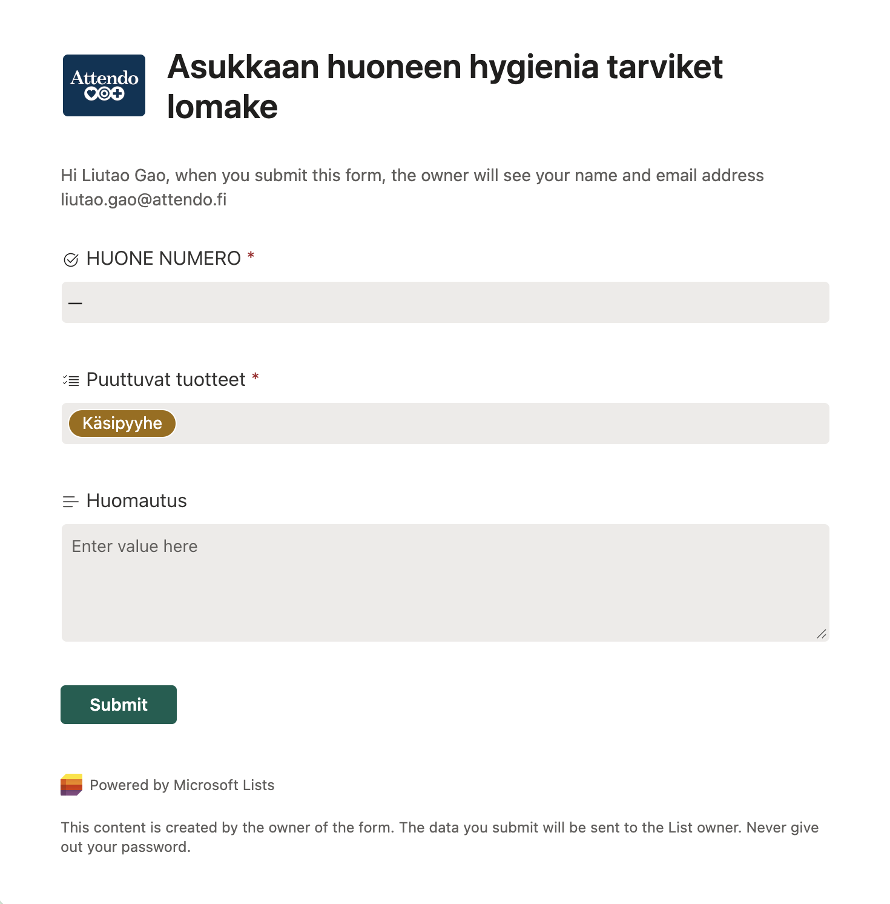

Digitaalinen osaaminen
Omaan IT-taustan. Opin uudet potilastietojärjestelmät (esim. Apotti) salamannopeasti ja huomaan herkästi työnkulun pullonkaulat.
Katso esimerkki parannusehdotuksestaKliinistä osaamista HUS:sta & teknologiaa hoitotyön tueksi
Kolme harjoittelujaksoa HUS:ssa ja Helsingin seniorisäätiössä, vanhustyön kliininen harjoittelu Attendo Vuoripirtissä sekä kv-vaihto Norjassa. Näin kenttäkokemuksesta syntyi neljä teknologiaa hyödyntävää ratkaisua ja opinnäytetyö Attendon hoivateknologiasta.
Olen sairaanhoitajaopiskelija Diakonia-ammattikorkeakoulussa ja aiemmin valmistunut IT-tradenomiksi Haaga-Heliasta (2019–2024). Yhdistelmä antaa minulle ainutlaatuisen näkökulman: ymmärrän sekä kliinisen työn todellisuuden että teknologian mahdollisuudet. Minulla on LOVe-lääkelupa.
Harjoitteluni: HUS Siltasairaala (ortopedia), HUS Tammisairaala (silmätautien päivystys), Helsingin seniorisäätiö (pitkäaikaishoito) ja Attendo Vuoripirtti (vanhusten ja ikääntyvien hoitotyö, 2026). Norjan Planetary Health -vaihto täydensi kokonaisuuden. Teen opinnäytetyöni Attendon hoivateknologian käyttöönotosta — kliinisestä tarpeesta olen rakentanut neljä teknologiaa hyödyntävää ratkaisua.
Kolme asiaa, jotka tuon mukanani jokaiseen työvuoroon.
Omaan IT-taustan. Opin uudet potilastietojärjestelmät (esim. Apotti) salamannopeasti ja huomaan herkästi työnkulun pullonkaulat.
Katso esimerkki parannusehdotuksestaVahva elämänkokemukseni tuo mukanaan paineensietokykyä. Kohtaan haastavat tilanteet (kuten saattohoito tai muistisairaat) rauhallisesti ja potilasta kunnioittaen.
En vain suorita annettuja tehtäviä. Pyrin ennakoimaan tarpeita ja kehitämään arkea. Minulla on kyky viedä asioita maaliin asti ideasta toteutukseen.
Monipuolista kliinistä kokemusta erikoissairaanhoidosta, päivystyksestä ja vanhustyöstä sekä kansainvälistä monialaisuutta.
Vanhusten hoitotyö keskittyy sairauteen, toimintakykyyn ja elämänlaatuun — siinä kehittyivät kärsivällisyys ja jatkuvuus. Harjoittelun aikana osallistuin Attendon puheesta kirjaamisen kehittämiseen (ks. IT-projektit).
Harjoittelu vahvisti kykyäni tehdä järjestelmällistä ensiarviota ja huomioida potilasturvallisuus kiireellisissä tilanteissa.
Opin arvioimaan potilaan vointia kokonaisvaltaisesti leikkauksen jälkeen ja toimimaan osana moniammatillista tiimiä.
Pitkäaikaishoito opetti minulle jatkuvuuden, lääketurvallisuuden ja asukkaan arjen tuntemisen merkityksen.
Vaihto syvensi ajatteluani siitä, miten ympäristö ja terveyspalvelut kytkeytyvät toisiinsa — ja missä oma teknologinen osaamiseni voisi tuoda lisäarvoa.
IT-osaamiseni avulla rakensin työkaluja ja esitin ratkaisuja, jotka kohdistuvat todellisiin hoitotyön ongelmiin — sairaalassa, vanhustyössä ja Attendon kehitystyössä.

Kliininen ongelma → teknologinen ratkaisu
Ongelma: Hopeatien palvelutalossa havaitsin, että asukkaiden ruoka-allergiatiedot
olivat hajallaan — virhe ruoka-aineen kanssa ei ole valitus, vaan hengenvaarallinen tilanne.
Ratkaisu: Rakensin sovelluksen, joka kokoaa allergia- ja ruokatiedot
yhteen paikkaan hoitajien käyttöön ruokailun aikana. Sovelluksen suunnittelussa korostuivat selkeys ja potilasturvallisuuden tukeminen.
Julkaistu & käytössä

Kliininen ongelma → tekoälyratkaisu
Ongelma: Pitkäaikaishoito-osastolla hoitajat tarkistivat Anja-pussien lääkkeet
Apotti-lääkelistaa vastaan manuaalisesti useita kertoja päivässä. Sama vaikuttava aine esiintyi
eri kauppanimillä (Burana → ibuprofeeni), mikä aiheutti toistuvaa epävarmuutta.
Ratkaisu: AI-pohjainen työkalu, joka skannaa lääkepussin, tunnistaa
vaikuttavat aineet ja vertaa ne reseptiin automaattisesti.
Huom: Tämä on opiskelijaprojektina rakennettu prototyyppi. Työkalu ei korvaa hoitajan ammatillista arviointia tai virallisia lääkehoidon prosesseja.
Julkaistu & käytössä
Kenttäkokemus → ryhmäprosessin työkalumuotoilu
Tausta: Attendon puheesta kirjaamisen sovellus otettiin pilotiksi
Attendo Vuoripirtissä — hoivakodissa, jossa tein vanhustyön kliinisen harjoittelun.
Sovellus on sittemmin laajennettu Attendon noin 400 hoivakotiin ja palkittiin
Grand One -palkinnolla.
Omat työt: Työskentelin tiiminä ryhmäaktiviteettien kirjaamisen parissa
ja huomasin reunatapauksen: saman merkinnän joutuu toistamaan jokaiselle osallistujalle
erikseen, vaikka kyseessä on yksi yhteinen tapahtuma.
Ratkaisumalli: Kehitin konseptin ”Yksi kirjaus, useampi osallistuja” —
puhekirjaus yhdistettynä monivalintaan, jolloin koko ryhmä dokumentoidaan kerralla.
Työn tulokset: Laadin käyttöpolun analyysin ja interaktiivisen prototyypin
(HTML/CSS/JS), jonka esitin Attendon IT-johdolle. Ehdotus välitettiin edelleen
projektipäällikölle jatkokehitystä varten.
Jatko: Projektipäällikkö hyväksyi jatkokehityksen — kehitän seuraavaksi
vuoronvaihdon raportointia (hoitajien välisen tiedonvälityksen tuki).
Projektipäällikkö hyväksyi myös opinnäytetyöni aiheen: tutkin sovelluksen
käyttöönoton onnistumisia ja esteitä osana Attendon valtakunnallista
käyttöönottoa, joka ulottuu noin 400 hoivakotiin vuoteen 2028 mennessä.
Työ tehtiin opiskelijana osana harjoittelua. Sovellus on Attendon oma tuotanto, ei opiskelijatyö.
Jatkokehitys käynnissä · Opinnäytetyö sovittu

Hoiva-ajan hukkaaminen → ilmoituspohjainen täydennys
Ongelma: Hygieniatarvikkeet loppuvat yllättäen. Hoitaja huomaa vasta kun
hanskat ovat loppuneet, joutuu jättämään asukkaan ja lähtemään varastolle. Siivoojat
kiertävät sokkona eivätkä tiedä, mitä mikäkin huone tarvitsee.
Ratkaisu: Ennakoiva ilmoitusjärjestelmä — hoitaja täyttää 10 sekunnin
lomakkeen ennen kuin tuote loppuu, siivooja saa automaattisen sähköpostivahvistuksen
ja täydentää normaalilla kierroksella. Odotusaika poistuu.
Tekninen toteutus: SharePoint-lista, -lomake ja automaattinen sääntö —
ei Power Automate -lisenssiä eikä uusia sovelluksia. Alkuperäiset suunnitelmat (Power Automate,
Teams, Power Apps) kaatuivat Attendon IT-rajoituksiin, joten ratkaisu rakennettiin
ympärillä olevat rajoitukset.
Status: Testattu 7.8.2026, hoitaja–siivooja-kierto sulkeutui onnistuneesti.
Esitelty Attendon johdolle, myönteinen vastaanotto. Ei vielä pilotissa.
Ratkaisu on opiskelijatyö, ei Attendon tuotanto. Tuotantokäyttöön ottaminen vaatii Attendon IT-arvioinnin.
Testattu · Ei vielä pilotissa
Kiinnostaako yhteistyö tai haluatko kuulla lisää osaamisestani? Ota rohkeasti yhteyttä.
Etsin sairaanhoitajan sijaisuuksia pääkaupunkiseudulla. Vastaan viesteihin 24 tunnin sisällä — kerro tarpeestasi, niin katsotaan sopiiko aikataulu.
Lähetä viesti